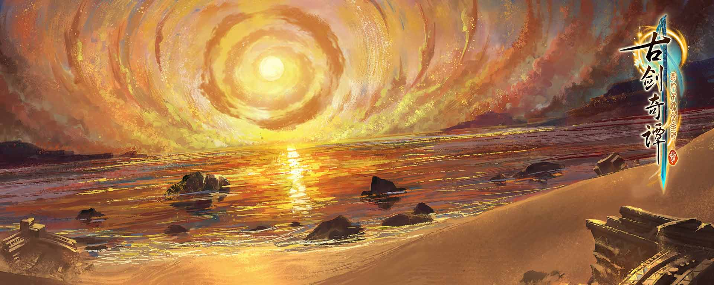
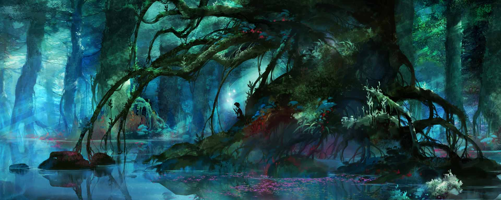
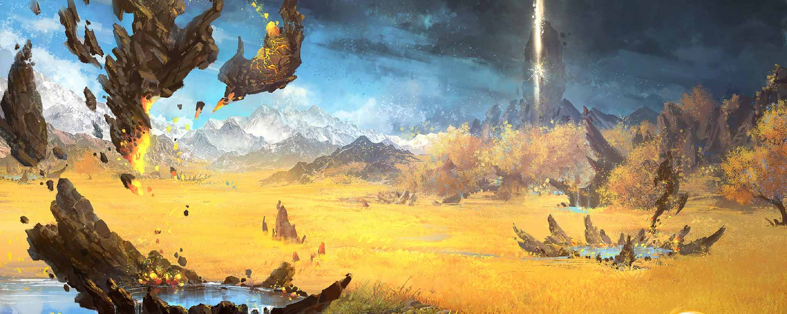

经天轮
遥夜湾

鄢陵

白梦泽

正文

身具辟邪王族之血的大妖，辟邪王玄戈的孪生兄弟。
北洛幼时流落人界，成长极其缓慢，几百年妖力停滞，形似痴儿。后幸有曲寒庭夫妇悉心照料，将他当做亲子养育。他对自己的血脉并无认同之感，常年抑遏妖力，希望以“人”的身份留在人间。
本作中他被寻回辟邪王城——天鹿城，旋即得到了玄戈要求他“继位”的嘱托。但北洛对此安排十分抗拒，不愿接受并意图离开。

北洛在古厝回廊下方见到的妖，自称“云无月”。
不少妖族将云无月尊称为“霒蚀君”——意为“月蚀”。她曾是名震北境、力量强绝的大妖，数百年前因为身受重伤而隐匿，至今妖力未复，比之全胜时期仍然相差了许多。
不生则死，不战则亡。通过一场接一场的战斗让自己变得更为强大，是云无月这类妖魔的生存法则。

博物学会成员，年轻的学者。
岑姓家族是轩辕黄帝后人中的一支，家风极好，似岑缨这样备受宠爱的嫡系，眼界开阔，毫无娇奢之风。她性格开朗，求知欲旺盛，这份与众不同的好奇心令她醉心于家族残卷中记载的阵法之术，同时对历史、地理和金石学皆有涉猎。
虽然对于认知世界的想法还有诸多不成熟的地方，但是在她的心里已经为自己定下了未来的目标。

上古联合部落轩辕丘的首领，人族之帝王，世称“轩辕黄帝”。
姬轩辕出身有熊，其父是有熊族长少典。相传其母附宝怀有身孕时梦见煌煌雷电，之后不久便产下一子。姬轩辕雄才大略，在他继任族长后，德政有之，征伐有之，经过数年的经营，有熊与轩辕丘文治武功，繁盛一时。
他在天文、民生、军备等方面的造物都对后世影响深远。
轩辕黄帝时的战将，统领黄帝六师中的餮餮部。缙云为剑术大家，武技当世无匹。仙人广成子曾言其剑有灭尽万法之势。天鹿城中流传的剑术最初便是由缙云所授。

巫炤来自于上古部族西陵，他是西陵巫之堂中最强的一人，西陵的“鬼师”，身份贵不可言。身为缙云好友的他，却是被缙云斩首而亡。数千年来，巫炤心底仇恨的火焰未熄，将要在人间重新搅起风云。

湖水岸下古墓中比巫炤更早“苏醒”的亡魂，因古考会的人拾取了她随身陪葬的玉梳而对他们痛下杀手。和巫炤一样，司危也是西陵巫之堂的祭司，因年纪最小，从小便备受关爱，以至于养成她随心所欲、爱恨激烈的性子。司危对西陵过去的岁月有多少依恋，对如今的现世就有多少憎恨。

妖族辟邪的王，北洛的哥哥。玄戈的力量之强，当前族中，无出其右。即便有重伤未愈，他仍带领近卫巡视着天鹿城的周边，探查近日里古怪的魔族异动。然而玄戈的伤为始祖魔所致，虽在十年间不断地以药物压制，但终是不能回天。作为一族之王，在过世前，他对于族民，对于亲朋都已经做出了自己的安排。
星工辰仪社的内门弟子，在门派中地位很高，有不少比他年长的师弟师妹，甚至是师侄。凌星见未及弱冠，时常显出少年人跳脱的心性，做事不循常理，总会突发奇想。作为星工辰仪社下任掌门人选的他，实则是不折不扣的天才之资，从小受到门内的悉心培养，在大事上足以独当一面，有谋划有担当。

黄金飞天鼠妖，因为被北洛救过一命，知晓了他妖族的身份，便死心塌地地想要追随。原天柿擅长烹饪，手艺上佳，除此以外的各种家务它都能做得很好。
《古剑奇谭三》战斗为全即时，玩家无需切换地图即可直接开战，合理利用技能就能高速地解决战斗，打击感大幅提升的同时，战斗体验会更加真实爽快。如果不想与敌人纠缠，也可以通过迅速移动随时离开战场。无论是战斗内外，敌方的行为都更加丰富，他们或许会隐藏身形于周遭的环境里，伺机突袭，他们也会因为主角方不同的攻击方式和攻击方向，呈现出不同的受击表现。

家园系统是《古剑奇谭》系列特色的辅助系统，玩家可以在家园中休养生息，也可以通过种地和养殖等方式制作游戏流程中所需的各种物品，还能精心布置家园摆设，打造属于自己的一片小天地。
《古剑奇谭三》的家园在刚进入时是一片灵力充沛却缺乏打理的荒地，通过柿饼的辛勤劳作，可以逐渐将此处建设成拥有房屋、农田、鱼塘、禽圈、矿洞等设施的乐园，再经由这些设施获取游戏中必需的各种资源，辅助玩家将流程顺利地走下去。游戏流程中，还将逐渐引入“种族契约”和“工匠雇佣”系统，帮助玩家获取材料，制造装备、药品、家具、外观等。
相比系列前作，此次的家园布置自由度更高，无论是小屋、围墙、地坪、植物、假山、桌椅、器具都可以在庭院内随意摆放。

皮影戏据传始于西汉，是一种用光源照射布帛或兽皮做成的剪影，以表演故事的民间戏剧。皮影艺人站在白色幕布后面，一边操纵皮影，一边用当地流行的曲调唱演故事，同时配以打击乐器和弦乐。
游戏中一部分剧情和战斗都是以皮影戏的方式呈现，精美的皮影形象、婉转的唱词无不彰显着传统文化的魅力。《古剑奇谭三》采用皮影戏的方式，一方面带玩家融入灵动活泼、妙趣横生的皮影世界，另一方面也是对我们传统文化的一种传承，和游戏剧情的主题相吻合。

皮影戏据传始于西汉，是一种用光源照射布帛或兽皮做成的剪影，以表演故事的民间戏剧。皮影艺人站在白色幕布后面，一边操纵皮影，一边用当地流行的曲调唱演故事，同时配以打击乐器和弦乐。
游戏中一部分剧情和战斗都是以皮影戏的方式呈现，精美的皮影形象、婉转的唱词无不彰显着传统文化的魅力。《古剑奇谭三》采用皮影戏的方式，一方面带玩家融入灵动活泼、妙趣横生的皮影世界，另一方面也是对我们传统文化的一种传承，和游戏剧情的主题相吻合。
三